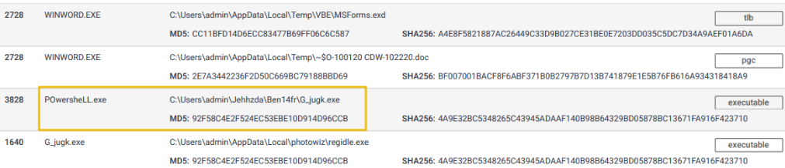

Pyramid of Pain
This is a fairly new concept being applied by reputable companies to improve the effectiveness of Cyber Threat Intelligence (CTI), threat hunting, and Incident Response (IR)
Check out these resources for a general overview of its meaning, and how reputable companies are implementing it:
Hash Values (Trivial)
Zone: Blue (Trivial)
Hash Value - This is a fixed-length numeric value that identifies a piece of data. This is possible through hashing algorithms.
MD5 (Message Digest, RFC 1321)
- Designed by Ron Rivest, 1992
- 128-bit hash value
- Are NOT considered SECURE
- RFC 6151 - published attacks against MD5 hashes (i.e. hash collision)
SHA-1 (Secure Hash Algorithm 1, RFC 3174)
- Invented by the National Security Agency (NSA) in 1995
- 160-bit hash value as a 40-digit hex number
- Was deprecated by NIST in 2011 - susceptible to brute force attacks
SHA-2 (Secure Hash Algorithm 2)
- Designed by NIST and NSA in 2001
- most common variant is SHA-256 - which returns a 256-bit hash value as 64 digit hex number.
Technically, two pieces of data could hash to the same hash value, but this is not considered cryptographically secure.
Because altering a file by even a single bit could produce an entirely different hash value, this could become very difficult to analyze as a threat hunter. Because of the hash value produced by hashing algorithms and how they can differ greatly by altering a single bit, its purpose is mainly to ensure the integrity of files.
How to get the hash value of a file or Directory
When threat hunting, you'll run into situations where you must retrieve the hash value of a file to check for its integrity. To do this, we use the Get-FileHash command. For example, if trying to get the file hash or write.exe, navigate to the directory where the file is located from Powershell and type:
If you're trying to get every hash value of the files within a directory, you can use the * wildcard in the path parameter, like so:
By default, Windows will generate the hash value using the SHA256 hashing algorithm, but you can specify which algorithm to use with the -Algorithm or -a options.
Now, for attackers, the method of modifying a hash value is trivial, as you will see in this example. Here's the MD5 hash value of a file, and for easier viewing, I've piped it to Format-List so it lists the result in a list format.
PS C:\Test> Get-FileHash .\SomeFile.txt -Algorithm MD5 | Format-List
Algorithm : MD5
Hash : 4298DF4E98CF0FEED4F511F8E67DC0EB
Path : C:\Test\SomeFile.txt
Using the AppendToHash text and using the >> operator, we redirect the text and append it to the output of the original file. Afterward, we get the MD5 hash value once again and notice we get an entirely different value.
PS C:\Test> echo "AppendToHash" >> .\SomeFile.txt
PS C:\Test> Get-FileHash .\SomeFile.txt -Algorithm MD5 | Format-List
Algorithm : MD5
Hash : 0F1DD50C559BCE6F35791F9E6495599D
Path : C:\Test\SomeFile.txt
IP Address (Easy)
- Zone: Green (easy)
- IP Address: Identifies devices on a network like desktops, servers, and cameras.
- Sending and Receiving Data: IP addresses are essential for transmitting data over a network.
- Pyramid of Pain: IP addresses are a green-level indicator, indicating their significance.
Defense Perspective
- Blocking IP Addresses: A common defense tactic to prevent incoming requests from certain IPs.
- Limitations: This tactic isn't foolproof; experienced adversaries can easily switch to new IPs.
- Challenge - Fast Flux: Adversaries use techniques like Fast Flux to evade IP blocking.
Fast Flux Technique
- DNS Technique: Used by botnets to hide malicious activities behind compromised hosts.
- Purpose: Concealing communication between malware and its command server.
- Dynamic IP Association: Multiple changing IPs associated with a domain name.
- Akamai's Definition: Fast Flux makes malware communication hard to detect.
- Example: Palo Alto's fictional scenario explains Fast Flux's resilience.
Domain Names (Simple)
Zone: Teal (Simple)
This section talks about the significance of domain names in the context of cybersecurity. Let's break down the key points:
Domain Names - Simplified
- Mapping to IP Addresses: Domain names link to IP addresses, allowing users to access websites using text-based URLs.
- Structure: Domain names can consist of a domain and top-level domain (e.g., evilcorp.com) or sub-domain, domain, and top-level domain (e.g., tryhackme.evilcorp.com).
- Impact on Attackers and Defenders: Changing domain names can be more cumbersome for attackers, involving purchasing, registering, and modifying DNS records. However, some loose standards and APIs make it easier for attackers to manipulate domains.
Although it can be harder for attackers to deal with Domain Names seeing that they would have to purchase, register, and modify a domain and its DNS records, DNS providers still provide APIs, which make it easier for attackers to change domains.
Punycode Attacks
Punycode
- A method to encode non-ASCII characters into ASCII-compatible format.
- Its main purpose is to try and deceit the human eye (obfuscation)
- i.e.
adıdas.dehas a Punycode ofhttp://xn--addas-o4a.de/
Punycode Attacks
- Attackers use Punycode to create URLs that look legitimate but redirect users to malicious domains.
Detection
- Modern browsers can translate obfuscated characters into Punycode, helping users identify such attacks.
Malicious URL Shorteners
- Attackers hide malicious domains behind URL-shortening services like bit.ly, goo.gl, etc.
Detecting Malicious URLs
- Proxy logs or web server logs can help identify connections to malicious domains.
- Examples of URL Shortening services:
- bit.ly
- goo.gl
- ow.ly
- s.id
- smarturl.it
- tiny.pl
- tinyurl.com
- x.co
Analyzing Connections in Any.run
Any.run Sandbox:
- Analyzing samples by executing them in a controlled environment.
Monitoring Connections:
- Any.run provides insight into HTTP requests, DNS requests, and communication processes.
HTTP Requests:
- Shows resources retrieved from a web server, like droppers or callbacks.
Connections:
- Reveals communications between processes, such as C2 (Command and Control) traffic or file transfers.
DNS Requests:
- Displays DNS requests made by malware to check internet connectivity.
Remember, these insights help defenders better understand the tactics attackers use, empowering us to stay vigilant and proactive in the ever-evolving landscape of cybersecurity.
Host Artifacts (Annoying)
- Zone: Yellow (annoying)
- Moving to the yellow zone intensifies detection, making attackers feel annoyed.
- Enhanced detection requires attackers to adjust their tools/methodologies, wasting their time and resources.
- "Host artifacts" are the signs attackers leave behind:
- Registry changes
- Suspicious processes
- Attack patterns or IOCs
- Malicious files dropped
- Unique threat indicators.
Suspicious process execution from Word:

Suspicious events followed by opening a malicious application:

Files modified/dropped by malicious actor: 
Network Artifacts (Annoying)
As we progress up the pyramid, we're essentially ramping up the difficulty for attackers, enhancing our detection odds.
- Zone: Dark Yellow (annoying).
-
Impact on Attacker: Requires more time to adjust tactics/tools when detected, affording defenders added response and remediation time.
-
Definition: Network artifacts.
- Examples: User-agent strings, C2 info, URI patterns from HTTP POST requests.
- Noteworthy: A unique or unfamiliar User-Agent string can signal a potential threat.
-
User-Agent: Per RFC2616, it's the request-header field indicating the user agent behind the request.
-
Detection:
- Through Wireshark PCAPs.
-
Using network protocol analyzers like TShark or IDS logs from sources like Snort.
-
Practical Application:
-
To filter User-Agent strings with TShark:
 The given command is used to analyze network traffic. Here's a breakdown:
The given command is used to analyze network traffic. Here's a breakdown:
tshark: This is the command-line version of Wireshark, a popular network protocol analyzer.--Y http.request: This filters the captured traffic to only show HTTP requests. The--Yflag indicates a display filter is being used.-T fields: This option specifies that the output should be formatted as fields, which makes it easier to see specific details.-e http.hostand-e http.user_agent: These are field options that indicate which specific fields you want to display in the output. In this case, you're interested in:http.host: The hostname or IP address of the server.http.user_agent: The User-Agent string, which provides information about the client (e.g., browser or tool) making the request.
-r analysis_file.pcap: This option specifies thattsharkshould read from the fileanalysis_file.pcap, which is a packet capture file.
In simple terms, this command reads the specified packet capture file (analysis_file.pcap), filters for HTTP requests, and then displays the host and User-Agent fields for each request. This can be useful for analyzing the sources of web requests and the tools or browsers that made them.
-
Key Example: Common User-Agent strings are associated with the Emotet Downloader Trojan.
-
Defensive Strategy: Identifying custom User-Agent strings used by attackers can lead to effective blocks, further hampering their intrusion efforts.
Tools (Challenging)
This stage improves our ability to detect suspicious activities. This discourages attackers from trying to breach your network. They might give up or attempt to develop a new tool, which requires time and resources. This is a turning point for attackers, making it harder for them to succeed.
Key Takeaways:
- Enhanced Detection: We've boosted our ability to spot potential threats and malicious actions.
- Attacker's Dilemma: Attackers may abandon their attempts or invest in creating a new tool.
- Investment Required: Creating a new tool demands effort, money, and technical skills.
- Defense Tools: We now rely on antivirus signatures, detection rules, and YARA rules.
- Utility of Tools: Attackers employ various tools like malicious macro documents, backdoors, payloads, and more.
- Command and Control: Attackers establish control infrastructure to manage their malicious activities.
Resources for Defense:
- MalwareBazaar & Malshare: Access to samples and YARA results for threat hunting.
- SOC Prime Threat Detection Marketplace: Shared detection rules against different threats.
- Fuzzy Hashing: A powerful technique to match similar files with minor differences. Essentially, it can compare file hashes and figure out if they're similar, even if they're not identical.
- SSDeep: A tool for fuzzy hashing, helping in similarity analysis.
Using SSDeep (Fuzzy Hashing Technique)
Tools like SSDeep are helpful in cybersecurity because they help spot things that might be hiding or trying to look different but are still very similar. It's a useful tool to spot sneaky stuff that's not immediately obvious!
Comparing Files
You can use ssdeep to compare two files and see how similar they are. Let's say you have two text files, file1.txt and file2.txt.
This command will give you a similarity score that indicates how closely the contents of the two files match.
Comparing Directories
If you want to compare all files in two directories, you can use a loop. Here's an example using Bash:
for file1 in /path/to/dir1/*; do
for file2 in /path/to/dir2/*; do
similarity=$(ssdeep -l -s "$file1" "$file2")
echo "Similarity between $file1 and $file2: $similarity"
done
done
This script will compare each file in dir1 with each file in dir2 and display their similarity scores.
Integrating with Python
You can also use the pyssdeep library to incorporate ssdeep in your Python projects. First, you need to install it:
Then you can use it in your Python script:
import ssdeep
hash1 = ssdeep.hash_from_file('file1.txt')
hash2 = ssdeep.hash_from_file('file2.txt')
similarity = ssdeep.compare(hash1, hash2)
print(f"Similarity between file1.txt and file2.txt: {similarity}")
These examples cover comparing individual files, comparing files in directories, and using ssdeep within Python. Remember, the higher the similarity score, the more alike the files are. This can be handy in cybersecurity to quickly identify potentially suspicious or related files.
By utilizing these resources and techniques, we are better equipped to defend against attackers and enhance the security of our network.
Remember, while attackers can be resourceful, we've fortified our defenses to counter their efforts effectively.
TTPs (Tough)
This is the final stage of the Pyramid of Pain!
The acronym TTPs stands for Tactics, Techniques & Procedures. If we're able to detect and respond to TTPs, we've successfully defended against a potential attack and may cause the attacker to retreat altogether or do more research.
TTPs include the MITRE ATT&CK Matrix, which is essentially a knowledge base of the tactics and techniques used by real-world adversaries. Understanding the MITRE ATT&CK framework helps cybersecurity professionals understand the steps taken by adversaries which in turn, help prevent future attacks.